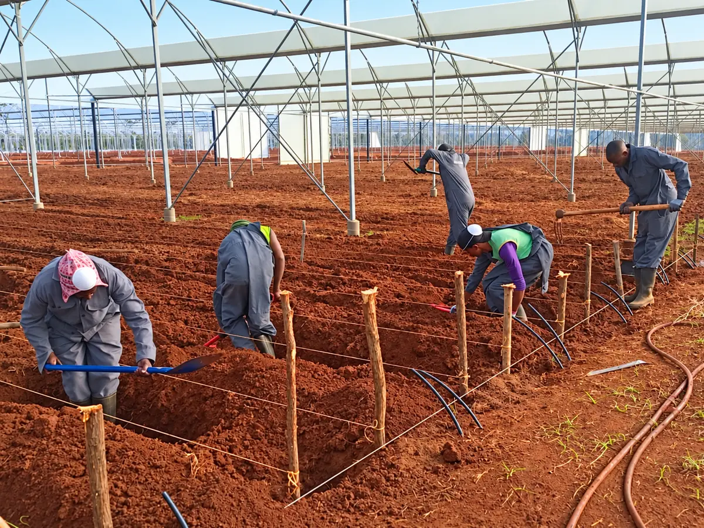

The Farm
Grown in Timau
Timau · Kenya
Height, in name and place
Altura means height or elevation. Its roots are in Timau, in Kenya’s Mount Kenya region.
Thursd reports an elevation of approximately 2,200 metres, with high light levels, cool nights, loamy virgin soils and abundant water. These conditions inspired the premium rose development. The Timau River follows the eastern boundary.

One integrated system
Altura is building greenhouses, irrigation and fertigation, climate monitoring, and technical, postharvest and cold-chain facilities, planned to work together from production to dispatch.
- Phase 1 development
- 10 haInfrastructure in development
- Long-term ambition
- 28 haPlanned rose-production area, not current output
Expansion is intended to follow production performance and market demand. First commercial harvests are planned for 2027, subject to commissioning and crop establishment.
Development account: Thursd, 14 October 2026 (opens a new tab). Company-reported figures and plans.